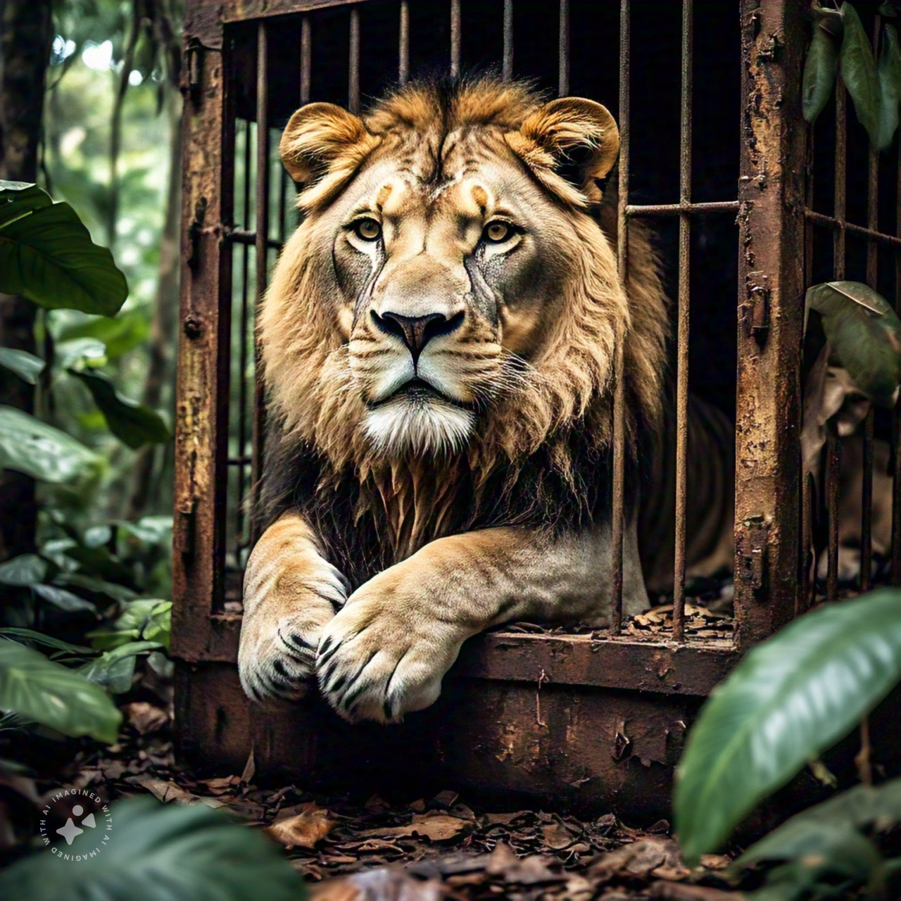

Simple Introduction
Jungles are natural environments dense with trees and plants, rich in biodiversity, characterized by high humidity and temperature. They provide ideal habitats for thousands of plant and animal species, divided mainly into herbivores (prey) and carnivores (predators).
Lion
The lion is a large feline mammal known for its strength and courage. It is often called the king of the jungle.
Elephant
The elephant is the largest land animal. It has a trunk, strong tusks, and high intelligence. There are African and Asian elephants.

Bear
Bears are strong, furry mammals that live in various climates, from rainforests to tundras.
Tiger
The tiger is a powerful predator, the largest of the cat family. It is known for its orange and black striped fur.

Rabbit
Rabbits are small mammals with long ears. They live in various environments like forests, deserts, and meadows.